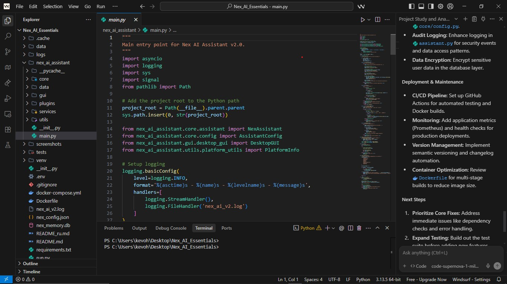

Twiga Threads Marketplace
Headless e-commerce experience for a Nairobi fashion house. Rebuilt the merchandising workflow, introduced localized checkout, and shipped analytics that inform restock decisions.
- Reduced abandoned carts by 31% through iterative UX testing and Klarna-style payment options.
- Integrated Shopify Storefront API with a Next.js front-end and Supabase analytics pipeline.
Next.js
TypeScript
Shopify API
Supabase

ChurnGuard ML
Customer churn prediction pipeline for a subscription-based edtech platform. Surfaces at-risk cohorts and powers targeted lifecycle email campaigns.
- Achieved 0.86 ROC-AUC by combining behavioral event data with payment history and contextual embeddings.
- Automated retraining and reporting via Airflow + Metabase, cutting weekly analyst time by 6 hours.
Python
scikit-learn
Airflow
Metabase

QuestMate
A React Native field operations companion app that keeps community health workers synced—online or offline.
- Offline-first architecture with background sync, enabling 98% completion rates in low-connectivity regions.
- Role-based dashboards and push notifications drove a 40% uptick in daily report submissions.
React Native
Expo
Firebase
Redux Toolkit
MyDiary
A personal journaling web app that lets users capture daily reflections, set moods, and visualize habits. Built as a living product to test ideas around mindful productivity.
- Implements secure entry storage with JWT-authenticated APIs and role-based permissions.
- Features mood tracking, tag filters, and a responsive UI that works across desktop and mobile.
Node.js
Express
MongoDB
EJS